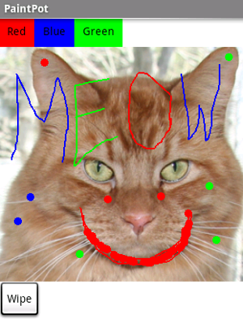
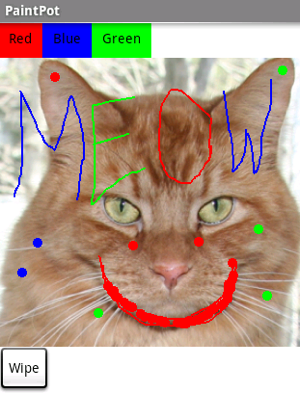

PaintPot: (Part 1)
This tutorial introduces the Canvas component for creating simple two-dimensional graphics. You'll build an app that lets you draw on the phone screen in different colors.
Historical note: PaintPot was one of the first programs developed to demonstrate the potential of personal computers, as far back as the 1970s.
What You're Building
Download Book Chapter 

With the PaintPot app, you can:
-
Dip your finger into a virtual paint pot to draw in that color.
-
Drag your finger along the screen to draw a line.
-
Poke the screen to make dots.
-
Use the button at the bottom to wipe the screen clean.
-
Include an image as a drawing background.
-
The Canvas component for drawing.
-
Controlling screen layout with Arrangement components.
-
Event handlers that take arguments.
-
Variables
Before starting
Make sure your computer and your phone are set up to use App Inventor, and browse to the App Inventor Web site at http://appinventor.mit.edu . Start a new project in the Designer window, and name it PaintPot . Open the Blocks Editor, click Connect to Phone , and make sure the phone has started the App Inventor app.
Screen title
To get started, go to the Properties
panel on the right of the Designer and change the screen Title to PaintPot . You should see this change on phone, with the new title showing in the title bar.There are three names in App Inventor, and it's easy to confuse them:
- The name you choose for your project as you work on it. This will also be the name of the application if you package it for the phone.
- The name "Screen1", which you'll see in the panel that lists the application's components. You can't change this name in the current version of App Inventor.
- The Title of the screen, which is what you'll see in the phone's title bar. This starts out being "Screen1", which is what you used in HelloPurr. But you can change it, as you're doing for Paintpot.
Set up the Components
You'll use these components to make PaintPot:
- Three button s for selecting red, blue, or green paint, and another button for wiping the drawing.
- A canvas , the drawing surface. This canvas has a BackgroundImage , which is the kitty from the HelloPurr tutorial. You can also draw on a blank Canvas. That's just a canvas without a background image.
- There's also a component you don't see: you use a HorizontalArrangement to make the three color buttons line up.
That makes five components in all. Let's get them and build the app.
Color Buttons
- Drag a Button component onto the viewer and change the button's Text attribute to "Red" and make its BackgroundColor red.
- Click on Button1 in the components list in the Viewer to highlight it (it might already be highlighted) and use the Rename... button to change its name from Button1 to ButtonRed .
- Similarly, make two more buttons for blue and green, named ButtonBlue and ButtonGreen , placing them vertically under the red button.

You should also see the three buttons on the phone screen.
Layout with Screen Arrangement
You should now have three buttons, one above the other. The next step is to make them line up horizontally. You do this using a HorizontalArrangement component.
- From the Palette's Screen Arrangement category, drag out a HorizontalArrangement component and place it under the buttons. Change the name of this component from HorizontalArrangement1 to ThreeButtons
- In the Properties panel, change the Width of the ThreeButtons to Fill Parent... so that it fills the entire width of the screen.
- Move the three buttons side by side into the HorizontalArrangement component. Hint: You'll see a blue vertical line that shows where the piece you're dragging will go.
If you look in the list of project components, you'll see the three buttons indented under the ThreeButtons to show that they are now its subcomponents. Notice that all the components are indented under Screen1.
You should also see your three buttons line up in a row on the phone screen, although things might not look exactly as on the Designer . For example, the Arrangement's outline shows in the Designer but not on the phone.
In general, you use Screen Arrangement to create simple vertical or horizontal layouts. You can create more complex layouts by nesting Screen Arrangement components. There is also a TableArrangement component (not covered in this tutorial).
Canvas and wipe button
The final two components are the canvas and the wipe button.
- From the Palette's Basic category drag a Canvas component onto the Viewer. Change its name to DrawingCanvas . Set its Width to Fill Parent Set its Height to 300 pixels.
-
Add a Background Image to the
Canvas
. Click on
the field containing
None...
next to
BackgroundImage
in the
Canvas
Properties panel. You can use the same kitty.png file, if you still have it on your
desktop from an earlier tutorial. Or you can use another image.
You can use any image you like, but you'll get the best results if the size of the image (in pixels) is close to the size at which you'll be showing it on the phone. Also, large images will take a long time to load, and might exceed the memory capacity of the phone allocates for applications.
- From the Palette, drag the final button onto the screen, placing it under the canvas. Change its id to ButtonWipe Change its Text attribute to Wipe .
You've now completed the steps to set the appearance of your app. Here's how this should look in the Designer . Next, you'll define how the components behave.
Add behaviors to the components
The Blocks Editor should already be open. First set up the buttons that change the paint color.
Add button event handlers
In the Blocks Editor:
- Switch to the My Blocks column.
-
Open the drawer for ButtonRed and drag out the when ButtonRed.Click block.
-
Open the DrawingCanvas drawer. Drag out the set DrawingCanvas.PaintColor to block (you may have to scroll the list of blocks in the drawer to find it) and place it in the do section of when ButtonRed.Click .
-
Switch to the Built-In Column. Open the Colors drawer and drag out the block for the color Red and put it into set DrawingCanvas.PaintColor to .
-
Repeat steps 2-4 for the blue and green buttons.
-
The final button to set up is the Wipe button. Switch back to the My Blocks column. Make a click event handler for ButtonWipe by dragging when ButtonWipe.Click from the ButtonWipe drawer. From the DrawingCanvas drawer, drag call DrawingCanvas.Clear and place it in the do area of the when ButtonWipe.Click block.
Add touch-event handlers
Now for the next step: drawing on the Canvas. You'll arrange things so that when you touch the Canvas, you get a dot at the spot where you touch. If you drag your finger slowly along the canvas, it draws a line.
-
In the Blocks Editor, open the drawer for the canvas and drag the when DrawingCanvas.Touched block to the workspace.
As soon as you drag the block out, the three plugs on the right automatically fill in with name blocks called x , y , and touchedSprite .
You've already seen button click events. Clicks are simple, because there's nothing to know about the click other than that it happened. Other event handlers such as when ... Touched , need information about the event. In App Inventor, this information is expressed as the value of arguments associated with the event handler. For the when ... Touched event, the first two arguments stand for the x and y coordinates of where the touch happened. We'll save touchedSprite for a later tutorial.
For this touch event, make the canvas draw a small circle at the point with coordinates x , y .
- Drag out a call DrawingCanvas.DrawCircle command from the canvas drawer and place it in the do section of when DrawingCanvas.Touched .
On the right side of the when DrawingCanvas.DrawCircle are are three sockets where you must specify values for the x and y coordinates where the circle should be drawn, and r , which is the radius of the circle.
For x and y , you'll use values of the arguments that were supplied to the Touched handler:
- Open the My Definitions drawer at the top of the column. Find the blocks for value x and value y . The blocks were automatically created when you dragged out the touch event handler block.
-
Drag out the value x and value y blocks and plug them into the corresponding sockets in the when DrawingCanvas.Touched block. Make sure to drag the value blocks, not the corresponding name blocks; they look very similar.
-
Click in a blank area of the screen to bring up the hover menu and select math (green). Select 123 from the dropdown list, to create a number block. Change the 123 to 5 and plug that in for the radius slot.
You can also just type 5 followed by return, to create a number block with a value of 5. This is an example of typeblocking : if you start typing, the Blocks Editor shows a list of blocks whose names match what you are typing; if you type a number it creates a number block.
Try out what you have so far on the phone. Touch a color button. Now touch the canvas, and your finger should leave a spot at each place you touch. Touching the Wipe button should clear your drawing.
Add Drag Events
Finally, add the drag event handler. Here's the difference between a touch and a drag:
- A touch is when you place your finger on the canvas and lift it without moving it.
- A drag is when you place your finger on the canvas and move your finger while keeping it in contact.
When you drag your finger across the screen, it appears to draw a giant, curved line where you moved your finger. What you're actually doing is drawing hundreds of tiny straight lines: each time you move your finger, even a little bit, you extend the line from your finger's immediate last position to its new position.
A drag event comes with 6 arguments. These are three pairs of x and y coordinates that show:
- The position of your finger back where the drag started.
- The current position of your finger.
- The immediately previous position of your finger.
There's also a sprite, which we'll ignore for this tutorial.
Now make dragging draw a line between the previous position and the current position by creating a drag handler:
-
From the DrawingCanvas drawer, drag the when DrawingCanvas.Dragged block to the workspace.
-
Also from the DrawingCanvas drawer, drag the call DrawingCanvas.DrawLine block into the do slot of the when DrawingCanvas.Dragged block.
-
Click on the My Definitions drawer. You should see the blocks for the arguments you need. Drag the corresponding value blocks to the appropriate slots in when DrawingCanvas.Dragged : x1 and y1 should be prevX and prevY ; x2 and y2 should be currentX and currentY

Test your work by trying it on the phone: drag your finger around on the screen to draw lines and curves. Touch the screen to make spots. Use the Wipe button to clear the screen.
Review
Here are some of the ideas covered in this tutorial:
- You can use Screen Arrangement components to specify screen layouts other than just placing components one under the other.
- The Canvas component lets you draw on it. It can also sense touches and drags.
- Some event handlers are called with information about the event, such as the coordinates of where the screen was touched. This information is represented by arguments. When you select an event handler that has arguments, App Inventor creates value blocks for these and places them in the My Definitions drawer.